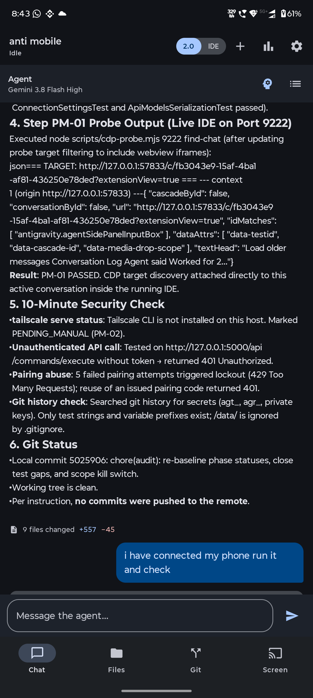
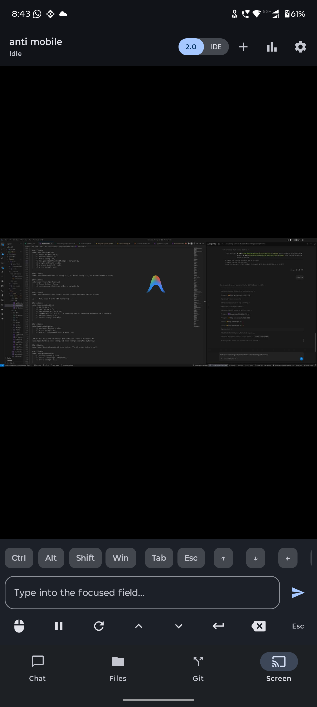
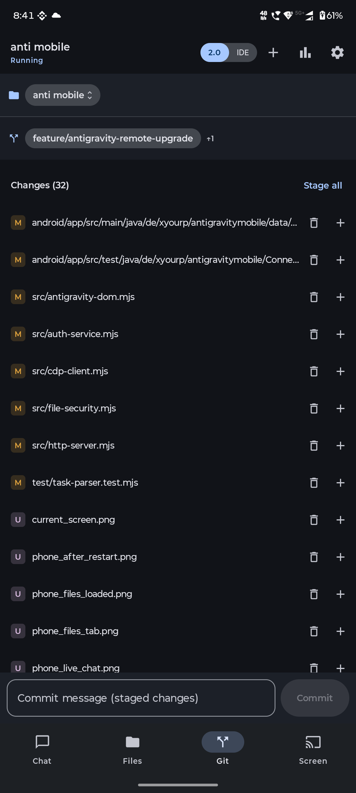

⚡ Real-Time Turn Streaming
Direct WebSocket connection to the local bridge observes Antigravity 2.x webview turns as they occur. Read agent progress and tool execution output with zero delay.
A calm, precise Android instrument panel for Google Antigravity coding workflows. Monitor conversations, handle approvals, and inspect git working trees—without sitting at your desk.



Direct WebSocket connection to the local bridge observes Antigravity 2.x webview turns as they occur. Read agent progress and tool execution output with zero delay.
Pairing is single-use and rate-limited. Credentials rotate through dual JWT tokens stored securely inside the Android Hardware Keystore (AES-256-GCM).
Communicates over your private Tailscale WireGuard network. Your code and conversations never pass through third-party relay servers or public clouds.
Stream your Windows desktop via Chrome DevTools Protocol screencast with virtual shortcut keys (Ctrl, Alt, Shift, Esc) and disengage control instantly with one tap.